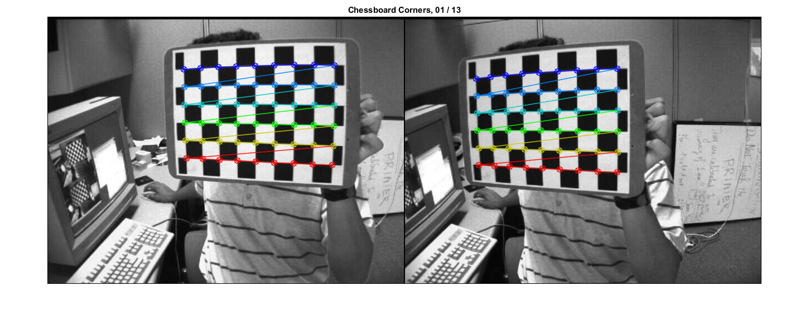
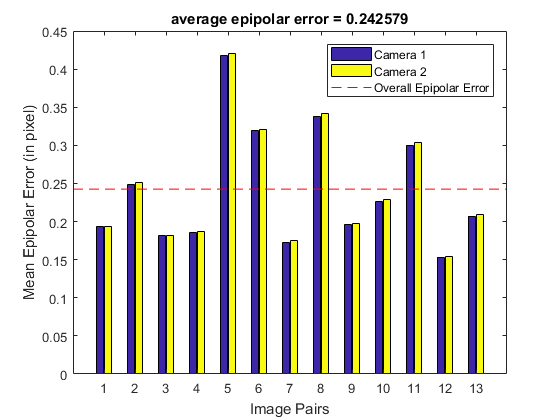
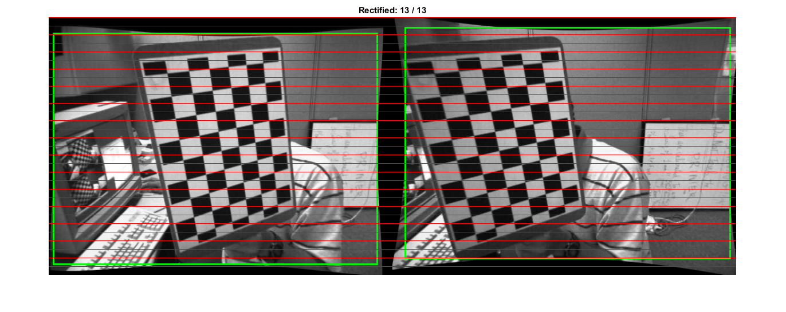
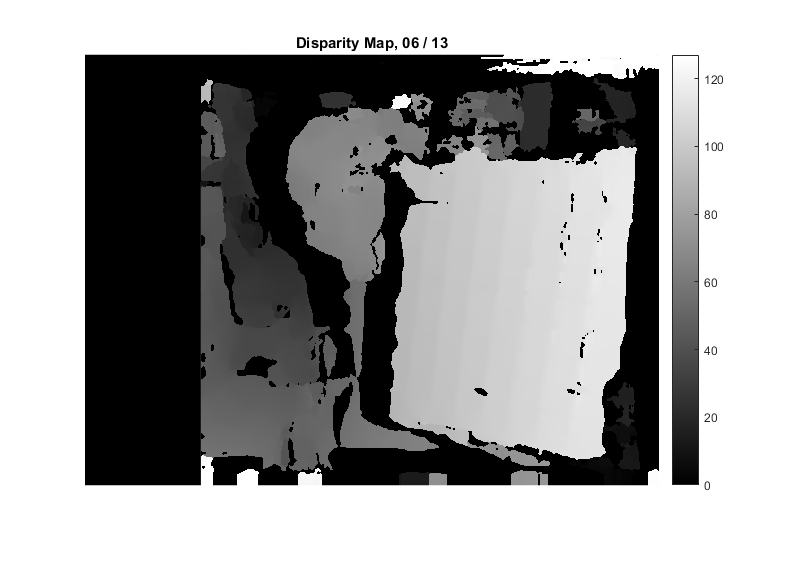
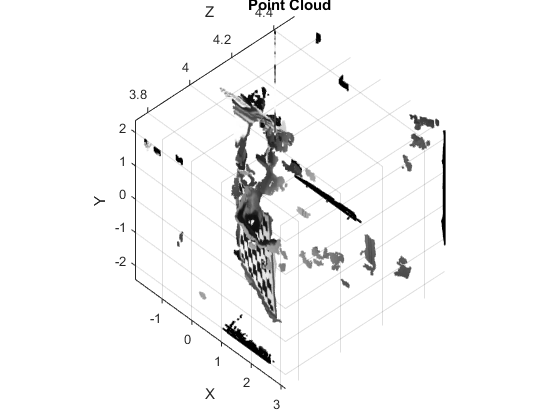

Stereo Calibration
Demonstration of stereo calibration, rectification, and correspondence.
You will learn how to use the following OpenCV functions and classes:
- cv.findChessboardCorners, cv.drawChessboardCorners
- cv.cornerSubPix
- cv.initCameraMatrix2D
- cv.stereoCalibrate
- cv.undistortPoints
- cv.computeCorrespondEpilines
- cv.stereoRectify, cv.stereoRectifyUncalibrated
- cv.findFundamentalMat
- cv.getDefaultNewCameraMatrix
- cv.initUndistortRectifyMap, cv.remap
- cv.StereoBM, cv.StereoSGBM
- cv.reprojectImageTo3D
Sources:
See also: stereoCameraCalibrator
Contents
Options
squareSize = 30.0; % square size in world units (mm) isVerticalStereo = false; % left-right or up-down stereo camera arrangement useCalibrated = true; % calibrated or uncalibrated stereo rectification doCheck = true; % calibration check
Stereo Images
list of chessboard images and the number of chessboard corners
if true files1 = cv.glob(fullfile(mexopencv.root(),'test','left*.jpg')); files2 = cv.glob(fullfile(mexopencv.root(),'test','right*.jpg')); patternSize = [9,6]; elseif ~mexopencv.isOctave() && mexopencv.require('vision') fpath = fullfile(toolboxdir('vision'),'visiondata','calibration','stereo'); files1 = cv.glob(fullfile(fpath, 'left', 'left*.png')); files2 = cv.glob(fullfile(fpath, 'right', 'right*.png')); patternSize = [7,6]; end assert(~isempty(files1) && numel(files1) == numel(files2)); N = numel(files1);
images info (assumed all images are of same size)
finfo = imfinfo(files1{1});
imgSiz = [finfo.Width, finfo.Height];
fprintf('%d pairs of stereo images\n', N);
fprintf('Image size = %dx%d\n', imgSiz);
fprintf('Pattern size (nx,ny) = %dx%d\n', patternSize);13 pairs of stereo images Image size = 640x480 Pattern size (nx,ny) = 9x6
Object Points
Prepare calibration patterns (points traversed row-wise, same order as findChessboardCorners)
[X,Y] = ndgrid(1:patternSize(1), 1:patternSize(2)); pts_o = ([X(:) Y(:)] - 1) * squareSize; pts_o(:,3) = 0; % Z=0 pts_o = repmat({pts_o}, 1, N); % same calibration coords used in all views
Image Points
Find coordinates of chessboard corners in left/right images
%TODO: reject image pairs where detection fails (any of left or right) %TODO: we could also detect corners on multiple scales in case detection fails pts1 = cell(1,N); pts2 = cell(1,N); opts = {'WinSize',[11 11], ... 'Criteria',struct('type','Count+EPS', 'maxCount',30, 'epsilon',0.01)}; tic for i=1:N im = cv.imread(files1{i}, 'Grayscale',true); pts = cv.findChessboardCorners(im, patternSize); pts = cat(1, pts{:}); pts1{i} = cv.cornerSubPix(im, pts, opts{:}); im = cv.imread(files2{i}, 'Grayscale',true); pts = cv.findChessboardCorners(im, patternSize); pts = cat(1, pts{:}); pts2{i} = cv.cornerSubPix(im, pts, opts{:}); end toc
Elapsed time is 0.776578 seconds.
Show detected checkerboards in first pair of images
i = 1;
im1 = cv.imread(files1{i}, 'Color',true);
im2 = cv.imread(files2{i}, 'Color',true);
im1 = cv.drawChessboardCorners(im1, patternSize, pts1{i});
im2 = cv.drawChessboardCorners(im2, patternSize, pts2{i});
if ~isVerticalStereo
im = cat(2, im1, im2);
else
im = cat(1, im1, im2);
end
imshow(im), title(sprintf('Chessboard Corners, %02d / %02d', i, N))Calibration
calibrate the stereo camera, specifying the distortion model in the options. (we could have also calibrated each camera independently first)
if false M1 = cv.initCameraMatrix2D(pts_o, pts1, imgSiz); % 'AspectRatio',0 M2 = cv.initCameraMatrix2D(pts_o, pts2, imgSiz); % 'AspectRatio',0 guess = {'UseIntrinsicGuess',true, ... 'CameraMatrix1',M1, 'CameraMatrix2',M2}; else guess = {}; end tic S = cv.stereoCalibrate(pts_o, pts1, pts2, imgSiz, ... 'FixIntrinsic',false, guess{:}, ... 'SameFocalLength',true, 'FixAspectRatio',true, ... 'ZeroTangentDist',true, 'FixK3',true, ... 'RationalModel',true, 'FixK4',true, 'FixK5',true, ... 'ThinPrismModel',false, 'TiltedModel',false, ... 'Criteria',struct('type','Count+EPS', 'maxCount',100, 'epsilon',1e-5)); %'FixAspectRatio',false, 'ZeroTangentDist',false, 'RationalModel',false toc if ~mexopencv.isOctave(), display(S); end
Elapsed time is 2.790928 seconds.
S =
struct with fields:
cameraMatrix1: [3×3 double]
distCoeffs1: [-0.2745 -0.0184 0 0 0 0 0 -0.2443 0 0 0 0 0 0]
cameraMatrix2: [3×3 double]
distCoeffs2: [-0.2808 0.0932 0 0 0 0 0 0.0167 0 0 0 0 0 0]
R: [3×3 double]
T: [3×1 double]
E: [3×3 double]
F: [3×3 double]
reprojErr: 0.4828
calibration accuracy
assert(all(isfinite([S.cameraMatrix1(:); S.cameraMatrix2(:)])));
assert(all(isfinite([S.distCoeffs1(:); S.distCoeffs2(:)])));
fprintf('Total RMS reprojection error: %f\n', S.reprojErr);Total RMS reprojection error: 0.482773
calibration quality check: (check how nearly the points in image1 lie on the epipolar lines of image2)
if doCheck % because the output fundamental matrix implicitly includes all the output % information, we can check the quality of calibration using the epipolar % geometry constraint |m2'*F*m1=0| (for the undistorted points) points1 = cat(1, pts1{:}); points2 = cat(1, pts2{:}); points1 = cv.undistortPoints(points1, S.cameraMatrix1, S.distCoeffs1, ... 'P',S.cameraMatrix1); points2 = cv.undistortPoints(points2, S.cameraMatrix2, S.distCoeffs2, ... 'P',S.cameraMatrix2); lines1 = cv.computeCorrespondEpilines(points1, S.F, 'WhichImage',1); lines2 = cv.computeCorrespondEpilines(points2, S.F, 'WhichImage',2); % dot product of points with epilines (ideal is zero) and accumulate error err1 = abs(sum([points1 ones(size(points1,1),1)] .* lines2, 2)); err2 = abs(sum([points2 ones(size(points2,1),1)] .* lines1, 2)); err = err1 + err2; % mean error per stereo image pair G = repmat(1:N, prod(patternSize), 1); G = G(:); e1 = accumarray(G, err1, [N 1], @mean); e2 = accumarray(G, err2, [N 1], @mean); avgErr = mean(err)/2; % (mean(e1) + mean(e2))/2 % plot figure, bar(1:N, [e1 e2]) line(xlim(), [1 1]*avgErr, 'LineStyle','--', 'Color','r') legend({'Camera 1', 'Camera 2', 'Overall Epipolar Error'}) xlabel('Image Pairs'), ylabel('Mean Epipolar Error (in pixel)') title(sprintf('average epipolar error = %f', avgErr)) end
save intrinsic parameters
fs = struct('M1',S.cameraMatrix1, 'D1',S.distCoeffs1, ... 'M2',S.cameraMatrix2, 'D2',S.distCoeffs2, ... 'width',int32(imgSiz(1)), 'height',int32(imgSiz(2))); cv.FileStorage(fullfile(tempdir(), 'stereo_intrinsic.yml'), fs);
Rectification
Bouguet's algorithm or Hartley's algorithm
if useCalibrated % calibrated stereo rectification: % compute rectification transforms for the two camera heads % (undistort + rectify) tic RCT = cv.stereoRectify(S.cameraMatrix1, S.distCoeffs1,... S.cameraMatrix2, S.distCoeffs2, imgSiz, S.R, S.T, ... 'ZeroDisparity',true, 'Alpha',-1); % 'Alpha',1 toc % OpenCV can handle left-right or up-down camera arrangements isVerticalStereo = abs(RCT.P2(2,4)) > abs(RCT.P2(1,4)); else % uncalibrated stereo rectification: % we use intrinsic parameters of each camera, but we compute the % rectification transformation directly from the fundamental matrix % (this method works best for images that have been undistorted previously % by independent single-camera calibrations, which we did while doing % the calibration quality check, see above) S.F = cv.findFundamentalMat(points1, points2, 'Method','8Point'); [H1, H2] = cv.stereoRectifyUncalibrated(points1, points2, S.F, imgSiz, ... 'Threshold',3); RCT = struct(); RCT.R1 = (S.cameraMatrix1 \ H1) * S.cameraMatrix1; RCT.R2 = (S.cameraMatrix2 \ H2) * S.cameraMatrix2; if true RCT.P1 = cv.getDefaultNewCameraMatrix(S.cameraMatrix1, ... 'ImgSize',imgSiz, 'CenterPrincipalPoint',true); RCT.P2 = cv.getDefaultNewCameraMatrix(S.cameraMatrix2, ... 'ImgSize',imgSiz, 'CenterPrincipalPoint',true); else RCT.P1 = []; RCT.P2 = []; end RCT.Q = eye(4); % TODO: ? RCT.roi1 = [0 0 imgSiz]; % TODO: ? RCT.roi2 = [0 0 imgSiz]; % TODO: ? end if ~mexopencv.isOctave(), display(RCT); end
Elapsed time is 0.019961 seconds.
RCT =
struct with fields:
R1: [3×3 double]
R2: [3×3 double]
P1: [3×4 double]
P2: [3×4 double]
Q: [4×4 double]
roi1: [10 31 603 430]
roi2: [24 20 605 430]
save extrinsic parameters
fs = struct('R',S.R, 'T',S.T, ... 'R1',RCT.R1, 'R2',RCT.R2, 'P1',RCT.P1, 'P2',RCT.P2, 'Q',RCT.Q); cv.FileStorage(fullfile(tempdir(), 'stereo_extrinsic.yml'), fs);
combined transformations to correct distortions and rectify images (precomputed maps, in fixed-point representation, for cv.remap)
RM = struct('map1',cell(1,2), 'map2',cell(1,2)); tic [RM(1).map1, RM(1).map2] = cv.initUndistortRectifyMap(... S.cameraMatrix1, S.distCoeffs1, imgSiz, ... 'P',RCT.P1, 'R',RCT.R1, 'M1Type','int16'); [RM(2).map1, RM(2).map2] = cv.initUndistortRectifyMap(... S.cameraMatrix2, S.distCoeffs2, imgSiz, ... 'P',RCT.P2, 'R',RCT.R2, 'M1Type','int16'); toc
Elapsed time is 0.068360 seconds.
Plot: apply and show rectified images
prepare image montage
sf = 1; % scale factor, to avoid displaying images that are too big if ~isVerticalStereo sf = min(sf, 600/max(imgSiz)); w = round(imgSiz(1) * sf); h = round(imgSiz(2) * sf); im = zeros([h,w*2,3], 'uint8'); else sf = min(sf, 300/max(imgSiz)); w = round(imgSiz(1) * sf); h = round(imgSiz(2) * sf); im = zeros([h*2,w,3], 'uint8'); end
prepare to draw epilines, shows how well rectified images are aligned. (epipolar lines are parallel scanlines in rectified image planes, passing through corresponding image regions)
k = 30; if ~isVerticalStereo % horizontal lines Y = repmat(1:round(h/k):h, 2, 1); X = repmat([1; w*2], 1, size(Y,2)); else % vertical lines X = repmat(1:round(w/k):w, 2, 1); Y = repmat([1; h*2], 1, size(X,2)); end X(3,:) = NaN; Y(3,:) = NaN;
prepare to draw valid ROIs (bounding boxes for valid pixels)
roi1 = round(RCT.roi1 * sf); roi2 = round(RCT.roi2 * sf); if ~isVerticalStereo roi2 = roi2 + [w 0 0 0]; % shifted to right else roi2 = roi2 + [0 h 0 0]; % shifted to bottom end
loop over image pairs, apply rectification, and show results
figure hImg = imshow(im); rectangle('Position',roi1, 'EdgeColor','g', 'LineWidth',2) rectangle('Position',roi2, 'EdgeColor','g', 'LineWidth',2) line(X(:), Y(:), 'Color','r', 'LineWidth',0.5) % 'AlignVertexCenters','on' for i=1:N % undistort+rectify image pair im1 = cv.imread(files1{i}, 'Color',true); im2 = cv.imread(files2{i}, 'Color',true); if false im1 = cv.drawChessboardCorners(im1, patternSize, pts1{i}); im2 = cv.drawChessboardCorners(im2, patternSize, pts2{i}); end im1 = cv.remap(im1, RM(1).map1, RM(1).map2, 'Interpolation','Linear'); im2 = cv.remap(im2, RM(2).map1, RM(2).map2, 'Interpolation','Linear'); % combine images side-by-side im1 = cv.resize(im1, [w,h], 'Interpolation','Area'); im2 = cv.resize(im2, [w,h], 'Interpolation','Area'); if ~isVerticalStereo im = cat(2, im1, im2); else im = cat(1, im1, im2); end % show final image set(hImg, 'CData',im); title(sprintf('Rectified: %02d / %02d', i, N)); pause(1); end
Corrrespondence: Disparity Map
When the stereo camera is oriented vertically, Hartley method does not transpose the image, so the epipolar lines in the rectified images are vertical. Stereo correspondence function does not support such a case.
if isVerticalStereo && ~useCalibrated return; end
pick a pair of rectified images
i = 6;
im1 = cv.imread(files1{i}, 'Color',true);
im2 = cv.imread(files2{i}, 'Color',true);
im1 = cv.remap(im1, RM(1).map1, RM(1).map2);
im2 = cv.remap(im2, RM(2).map1, RM(2).map2);
if false
% crop (see also Alpha option of stereoRectify)
roi12 = cv.Rect.union(RCT.roi1, RCT.roi2);
im1 = cv.Rect.crop(im1, roi12);
im2 = cv.Rect.crop(im2, roi12);
end
%figure, imshow(cat(3, rgb2gray(im1), rgb2gray(im2), rgb2gray(im2))) % stereoAnaglyphcompute disparity on the undistorted and rectified stereo image pair
if true bm = cv.StereoSGBM(); bm.NumDisparities = 128; bm.BlockSize = 25; bm.SpeckleRange = 4; bm.SpeckleWindowSize = 200; elseif true bm = cv.StereoBM(); bm.NumDisparities = 192; bm.BlockSize = 21; else bm = cv.StereoSGBM('MinDisparity',-64, 'NumDisparities',192, ... 'BlockSize',11, 'P1',100, 'P2',1000, 'Disp12MaxDiff',32, ... 'PreFilterCap',0, 'UniquenessRatio',15, ... 'SpeckleWindowSize',1000, 'SpeckleRange',16, 'Mode','HH'); end tic D = bm.compute(rgb2gray(im1), rgb2gray(im2)); toc
Elapsed time is 0.147792 seconds.
disparity map is stored in 16-bit fixed-point representation, with values scaled by 16. To get real disparity values, we divide by 16.
DD = single(D) / 16;
the minimal value in D correspond to the invalid disparity value, i.e: invalid_disp_scaled = (bm.MinDisparity - 1) * bitshift(1,4), or in DD: invalid_disp = (bm.MinDisparity - 1) (these are outliers/missing-values where the disparity was not computed)
DD(D == min(D(:))) = NaN;
fprintf('min=%d, max=%d\n', min(DD(:)), max(DD(:)));min=0, max=127
show disparity map
figure, imshow(DD, []) % [bm.MinDisparity, bm.MinDisparity + bm.NumDisparities] colormap('gray'), colorbar title(sprintf('Disparity Map, %02d / %02d', i, N))
3D Reconstruction
point cloud (XYZ-coords and corresponding colors)
if true %TODO: something is wrong with the Q matrix, result seems always bad! if true Q = RCT.Q; Q(4,4) = 1/Q(4,3); % TODO: ?? else Q = eye(4); end XYZ = cv.reprojectImageTo3D(D, Q); % 'HandleMissingValues',true XYZ = reshape(XYZ, [], 3); else [X,Y] = meshgrid(1:size(DD,1), 1:size(DD,2)); XYZ = [X(:) Y(:) DD(:)]; end C = reshape(single(im1)/255, [], 3);
remove invalid points (filter invalid disparities) which are set to infinite distances bigZ=10000 by reprojectImageTo3D when HandleMissingValues=true)
mask = (D(:) == min(D(:))); XYZ(mask,:) = []; C(mask,:) = []; whos XYZ C
Name Size Bytes Class Attributes C 166233x3 1994796 single XYZ 166233x3 1994796 single
visualize point cloud
figure, scatter3(XYZ(:,1), XYZ(:,2), XYZ(:,3), 6, C, '.') title('Point Cloud'); xlabel('X'); ylabel('Y'); zlabel('Z'); axis tight if ~mexopencv.isOctave() axis vis3d else %HACK: vis3d mode not recognized in Octave set(gca, 'CameraViewAngle', get(gca, 'CameraViewAngle')); set(gca, 'PlotBoxAspectRatio',get(gca, 'PlotBoxAspectRatio')); set(gca, 'DataAspectRatio', get(gca, 'DataAspectRatio')); end if ~mexopencv.isOctave() %HACK: CAM* functions not implemented in Octave cameratoolbar cameratoolbar('SetCoordSys','y') %cameramenu else view(-37.5,-60) rotate3d on end